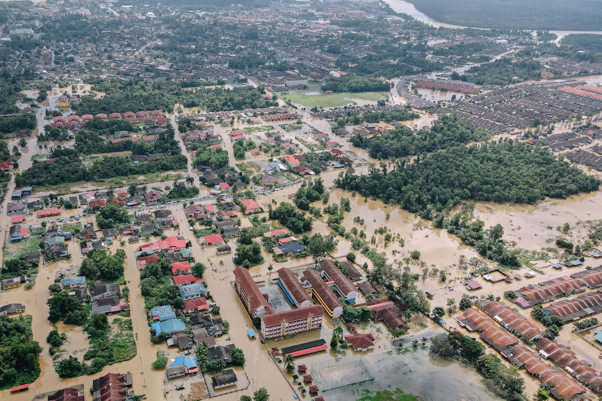

Enchentes não esperam. Sua segurança também não.
A HidroSafe é uma solução tecnológica inteligente que antecipa riscos de enchentes, emite alertas em tempo real e oferece rotas seguras para proteger você, sua família e sua cidade. Tudo isso em uma plataforma simples, acessível e pensada para situações críticas.
Quando a chuva vira ameaça
As enchentes urbanas atingem milhares de pessoas todos os anos, destruindo casas, isolando famílias e interrompendo serviços essenciais. A falta de monitoramento em tempo real torna a resposta lenta e ineficaz, aumentando os danos e colocando vidas em risco.
